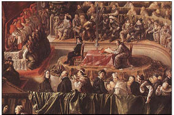

Dördüncü Haçlı Seferinin Jeopolitik Sonuçları
Konstantinopolis’in 1204’ten 1261’e kadar Latin işgalinde kalmasını sağlayan Dördüncü Haçlı Seferi’nin temel sonucu, Hıristiyanlık âleminde 1054 kırılmasıyla başlayan hizibin, birbirine can ve din düşmanı iki mezhebe ayrılması oldu.
Greko Romen ile Latin Kiliselerin egemenlik ve öncüllük çekişmelerine rağmen, o zamana değin “ekümenik konsil”lerin kurallarına uyan tüm Hıristiyanlara, “Ortodoks”, yani “doğru yol izleyen”ler deniliyordu.
Konstantinopolis’in yağma ve işgalinden öteye, bu deyim İsa’nın öğretisini Yunanca yazıp okuyan Romalıların mezhebini tanımlamaya yarar ve bizim dilimize Ortodoks Rumlar olarak yansırken; İsa’nın öğretisini Latince yazıp okuyan Batı Romalıların mezhebi, “Latin Rumlar” diye anıldı.31
Günümüzde, Latin Rumların başta gelen sıfatı “Katolik” sözcüğü hâlâ yoktu ortada!
Ortaçağ’da, Papa’nın otoritesindeki müminler, kısa yoldan Latin diye ifade ediliyordu.
Zaten 1492’den öteye peyderpey keşfedilen Güney Amerika’nın kolonizasyonunu, Papa’ya bağlı Krallar başlattığı ve “Katolik” sözcüğü yokluğunda yeni sömürgeleri Latin Roma Kilisesi’ne bağladığı için Latin Amerika denilmiştir.
Latin ve Ortodoks kavgasında, gerekçenin de silahın da Latince ile Yunanca arasındaki rekabet olduğunu düşünürseniz, din savaşlarının inanç farklılığından çok dil farklılığından çıktığı; dolayısıyla cemaatlerde bile asıl ortak kültürü, imanın değil, etnik aidiyetin biçimlediği çok açıktır...
Hıristiyanlık âleminin tarihsel öncülüğünü hem sahte bir vasiyet hem de düşmanca saldırı ve işgalle Konstantinopolis Ortodoks Roma Patrikliğinin elinden almak isterken mezhep bölünmesine neden olan Papalık makamı ve egemen olduğu Latinlere “Katolik” sıfatı, ancak ikinci bir mezhep ayrışmasından sonra, 16. yüzyılın sonunda eklemlendi.
Latinler, tıpkı Papa’nın otoritesini reddeden Bogomil ve Ortodokslar gibi boğazladıkları Protestanların varlığının, hiç olmazsa Fransa’da dolaylı yoldan kabul edildiği 1598 Nantes Antlaşması’na; kendi mezheplerini tarihte ilk kez “Katolik, Apostolik ve Romalı din” diye yazdılar.
En üst makamı (CEO’su!) Papa olan Latin Roma Kilisesi, ayrıştığı mezheplere de öncül ve önderlik iddiasını sürdürdüğü için olsa gerek, o gün bugündür hiçbir resmî söyleminde “Katolik” sıfatını kullanmadı!
Ama Papalığa bağlı kalan Latin Romalılar, tüzel kişiliklerini artık tanısalar da bir zamanlar “sapkın” ilan ettikleri Ortodoks, Protestan, Anglikan vb. mezheplerinden farklı ve “öz Hıristiyan” olduklarını vurgulamak için “Katolik” sıfatını benimserken, bağlı oldukları kiliseleri de öteki kiliselerden “Katolik” diye ayırdılar ve Papalık makamını da “Katolik” diye tarif ederler.
Katoliklerin, Latin Roma Kilisesi’nin evrensel iktidar iddiasına isyanla kurulmuş diğer mezhep ve Kiliselerin karşısında “esas din”den oldukları inancı öylesine köklüdür ki, bugün sıradan ve dindar hangi Katolik’e, “Hıristiyan kime denir?” diye sorsanız, “Katoliklere,” yanıtını alırsınız. Öteki mezhepler için Protestan der, Ortodoks der, Ermeni der, Evangelist der, der oğlu der, ama Hıristiyan demez...
Katolikler, 1520’den 1787’ye kadar Protestanlara karşı da savaşmış ve büyük mezalim yapmışlardır.
Ama tarihten günümüze dinmeyen nefret, azalmayan düşmanlık, kabuk tutmayan yara, Ortodokslar ile Katolikler arasındadır.
Çünkü Katolikler, Protestanlara mezalim ve kıyım yapmakla yetindi. Çünkü Protestanların, Konstantinopolis’ten kaldırdıkları ganimet kadar ne mülkü vardı ne de sıfatı.
Oysa Katolikler, Ortodoksların kadim başkentini yıktılar, tüm zenginliklerini ve “Kutsal Emanetler”ini yağmaladılar ama en önemlisi, Hıristiyanlık âlemi önderliğini çaldılar!
Özelinde dördüncü, genelinde Haçlı Seferlerinin, ilerleyen çağlarda süreklilik kazanan jeopolitik sonucu ise küresel güç dengesini yavaş yavaş Batı lehine değiştirmiş olmasıdır. Doğu Roma’yı zayıflatıp etkisizleştirirken, Avrupa’yı inişli çıkışlı, ama durdurulamayan bir yükseliş sürecine taşımıştır.
Bu yükselme süreci, gerek Avrupa içi savaşlarda, gerekse Osmanlı İmparatorluğu’nun fetihleriyle zaman zaman kesintiye uğramış olsa da Hıristiyan Batı’ya bugün de geçerli olan küresel etkinlik ve üstünlük konumunu sağlamıştır.
Hemen hepsi yenilgiyle biten Haçlı Seferleri’nin yapılmış olması bile, Avrupalı devletlere Ortadoğu’da ticaret limanları, dolayısıyla zenginlik kazandırmıştır. Haçlılara karşı mücadele eden İslam dünyasını kazandığı zaferlere rağmen yorgun düşürdüğü, hatta dünya ticareti ve bilimsel atılımlarda Avrupa’yı öne geçirerek, İslamiyetin “Aydınlanma” sürecini bile tıkadığı söylenebilir, bu seferlerin.
Çünkü...
Antik Yunan ve Roma bilgelerinin mitolojiden felsefeye, mimariden matematiğe her dalda bıraktıkları bilimsel eserleri Konstantinopolis’ten yağmalayan Avrupalılar, Ortadoğu’daki İslam uygarlığından da o zamana değin bilmedikleri pek çok pozitif bilgi apartmışlardır. Batıdaki bilginlerin, Kilise’nin din dogmalarıyla çeliştiği için yasaklayıp unutturduğu bu antik bilgilere ulaşması, bir süre sonra İtalya’dan başlayarak Ortaçağ karanlığını yırtacak Rönesans’ın (Yeniden Doğuş) meşalesini yakmıştır!
Çünkü bilginler arasında, Ortaçağ Hıristiyan kültürü ile antik Greko Romen kültürünü harmanlayan ve ister dinsel olsun, ister bilimsel, bilgiyi insanlığa hizmet olarak düşünen Hümanizm akımını başlatmıştır.
Hümanist bilgin ve din adamları, insan aklını ilk kez sınırsız bir öğrenme yeteneği olarak düşünmüş ve her alanda bilgiye ulaşma hakkını savunmuştur. Başka bir deyişle, kültürü yaymaya ve toplumsallaştırmaya çalışmışlardır. Bunu yaparken de bilgiye din odaklı yaklaşan ahlakın yerine laik erdem diyebileceğimiz “etika” prensiplerini kabul etmişler ve kutsal bilinen dogmalar dahil, varsayılan tüm doğruları, bulguları tarafsızlıkla incelemek gereğini ortaya koymuşlardır.
Hümanizm akımı, insanın iyiyi kötüden, zararlıyı yararlıdan, özgür iradeyle ayırt edebilecek evrensel bir dürüstlüğe ve akılcılığa (rasyonalite) sahip olduğunu varsayar. Dürüstlük ve akılcılık da, her doğrudan kuşkulanmayı gerektirir.
Sonuç olarak Hümanistler, ruhban bile olsalar, din dogması diye sunulan kutsal bilgileri de etik dürüstlükle doğrulamak ya da yalanlamak zorundadır.
Bu da “bilinmeyenin korkusundan geçinen” din tüccarlarının hiç işine gelmediği gibi, bu ticaretin genel merkezi Latin Kilisesi’nin temelini oyacaktır.
Gördüğünüz gibi tarih, ava gidenin avlandığı bir ders dizinidir.
Hümanizm akımıyla yayılan Rönesans fikirlerinin, dinde reform istemiyle “karşı çıkmak” (protest) sözcüğünden türeyen Protestan Kilisesi’nin doğumuna ve Hıristiyanlığı ikinci kez bölen mezhep ayrışmasına yol açtığı düşünülürse...
Batı’nın önce fikirsel, ardından bilimsel alanda ilerlemesine neden olan Haçlı Seferlerinin tüm Hıristiyanlık âlemini Latin Kilisesi’nin haçı altında birleştirmek ülküsünün, Latin Kilisesi’nin parçalanmasıyla sonuçlandığını söyleyebiliriz.
Ancak...
Batılı kafasının, hezimetlerden bile kazançlı çıkması ve Haçlı Seferlerinin dünyanın döndüğünü iddia eden Galileo’yu ölüm cezasına çarptıran Papa’ya rağmen mantık üretmesinin engellenememesi, gerçekten incelemeye değer ve bir başka kitabın konusu olabilir, olmalıdır da.
Bu kafa, din baskısının en ağır olduğu bir dönemde, tam da Rönesans’ı başlatan Hümanist bilginlerden Galileo’nun fikrinden yola çıkarak, Osmanlı’nın denetimi altına giren Akdeniz’den geçmeden Hindistan’a varılacağını düşünmüştür. Ve dünya denizlerini ters yönden dolanmak için Atlantik Okyanusu’nu aşarken, önce Hindistan sandığı Amerika kıtasını keşfetmiştir.

Galileo, Engizisyon Mahkemesinde (1633)
Galileo’nun imzası
31 Tarihin en eski Hıristiyan Kiliselerinden Ermeni Apostolik Ortodoks Kilisesi, 553 yılında gerek Doğu Roma, gerek Batı Roma Kiliselerinden bağımsızlığını resmen ilanla, “Rum” (Romalı) olmak özelliğini taşımayan, özerk bir yapılanmadır. Ayin dili klasik Ermenice (Grabar) olup patriklerine Katolikos denir. Kilise’yi tanımlayan “Ortodoks” sıfatıyla birlikte, Hıristiyanlık öğretisinin ezelden beri temel tarifleri “evrensel” (Katolik) ve “doğru yol” (Ortodoks) kavramlarını buluşturan bir akımdır. Doğu’da başka özerk Kiliseler ve cemaatler de var. Sınırlı önemde ve kitabın ana konusuyla ilgisiz olduklarından söz etmiyorum.